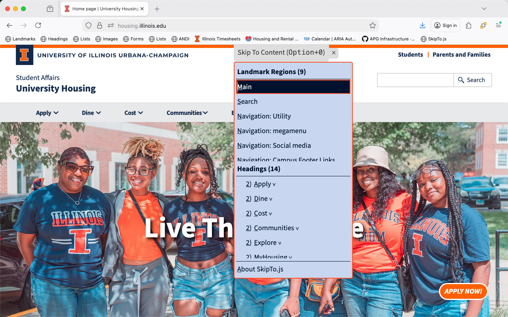

Adding SkipTo.js to a Web Page

Benefits
- Easy and powerful way to conform to the “Bypass Blocks” requirement of the Web Content Accessibility Guidelines.
- Screen reader users can get a higher level navigation menu without having to use the screen reader landmark and header navigation commands which typically include longer lists of lower level headings and less used landmarks.
- Keyboard only users can more efficiently navigate to content on a page.
- Speech recognition users can use the menu to more efficiently navigate to content on a page.
- When the “Skip To Content” menu button is visible when the page is loaded everyone can use it to identify and navigate to important regions on a page.
- Authors can configure SkipTo.js to identify the most important regions, ideally about 7-12 items to make it easier for people to read the list and choose an option. Remember the more items, the longer it will take for the user to identify which item they want to choose.
Examples
There are two main ways to use the menu button for SkipTo.js in a page. In the default configuration the menu button is always visible making it useful to everyone to easily find and navigate to the important content regions identified by the author. This is similar to how curb cuts help more than just people using wheelchairs. It is also easier for people using voice recognition to activate the button using the “click skip to content” command and use similar voice commands to activate SkipTo.js menu items. The “popup” option is the more traditional approach to fulfilling the “bypass bocks” requirement of the Web Content Accessibility Guidelines, but this option makes the feature less visible to people who might benefit.
Visible Menu Button (default)
- University Housing
- AInspector for WCAG Evaluation browser extensions
- Headings, Landmarks and Links (H2) browser extensions
- Open Web Accessibility Services
Popup Menu Button
- University of Illinois
- ARIA Authoring Practices Guide
- Admissions at the University of Illinois
- cPanel Web Hosting Service @ Illinois
- College of Applied Health Sciences (Web components)
- College of Education (Web components)
NOTE: Popup menu button option is available through configuration of SkipTo.js when it is loaded using the data-skipto="displayOption: popup" attribute on the script tag referencing the SkipTo.js script.
Features
| Feature | Description |
|---|---|
| Button Visibility |
The "Skip To Content" button can be visible (default) or hidden after the page completes loading. Note:When the SkipTo.js button is visible when the page loads and is obscuring page content use the "hide" button to change SkipTo.js to popup mode. |
| tab | After the page loads, pressing the tab key will bring focus to the "Skip To Content" button. If the button was hidden it becomes visible. |
| space and down arrow |
When focus is on the button, users can open the menu using the space or down arrow key to view or select the landmarks and headings on the page. |
| Landmark Items |
In the landmark regions group the landmarks are ordered by the importance of the landmark for navigation: main, search, navigation, complemntary and contentinfo.
|
| Heading Items |
In the heading group the headings are in document order. By default only h1 and h2 headings are shown in the list. More headings can be shown using configuration options.
|
| Scrolling into View | Moving keyboard focus or hovering over menu items scrolls the associated area on the page into view. |
| Menu Shortcut Key |
A shortcut key can be used to open the SkipTo.js menu from anywhere on the page.
|
What You Need To do
All you need are either skipto.js or skipto.min.js from the “/dist/” directory of this repository. The skipto.min.js script is a minified (a lighter version) of skipto.js script.
CDN Service
The easiest way is to include a reference to skipto.min.js on your HTML page or template is through the CDN service, as follows:
github.com CDN service:
<script src="https://skipto-landmarks-headings.github.io/page-script-5/dist/skipto.min.js"></script>
NOTE: CDN referenced files may not be available to computers behind firewall protected networks.
Local File on Your Web Server
Copy the skipto.js or skipto.min.js to the file system of your web server and reference it from your web page or templates using a script tag, as follows:
<script src="https://[path to Javascript files]/skipto.min.js"></script>
Warning Messages
The following warning messages may be rendered to the console:
| Message | Action |
|---|---|
| Skipto is already loaded | Additional SkipTo’s are ignored |
| No headings found in main | Searches for headings anywhere on the page |
| No headings found on page | SkipTo menu reports no headings on the page |
| No landmarks found on page | SkipTo menu reports no landmarks on the page |
| Error in heading configuration | Sets configuration to look for any h1 of h2 headings |
| Error in landmark configuration | Sets configuration to look for main search and navigation landmarks |
| Unsuported or deprecated configuration option “abc” | “abc” option is ignored and/or default setting is used |